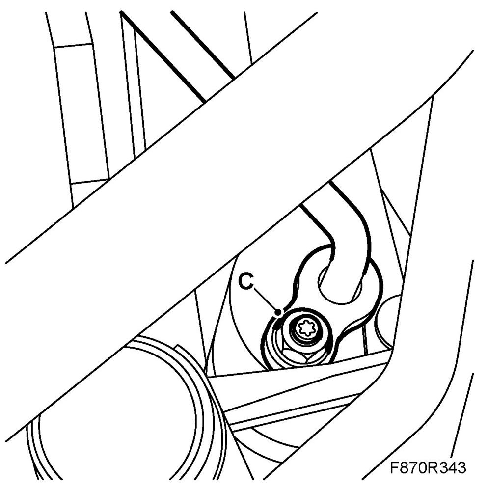
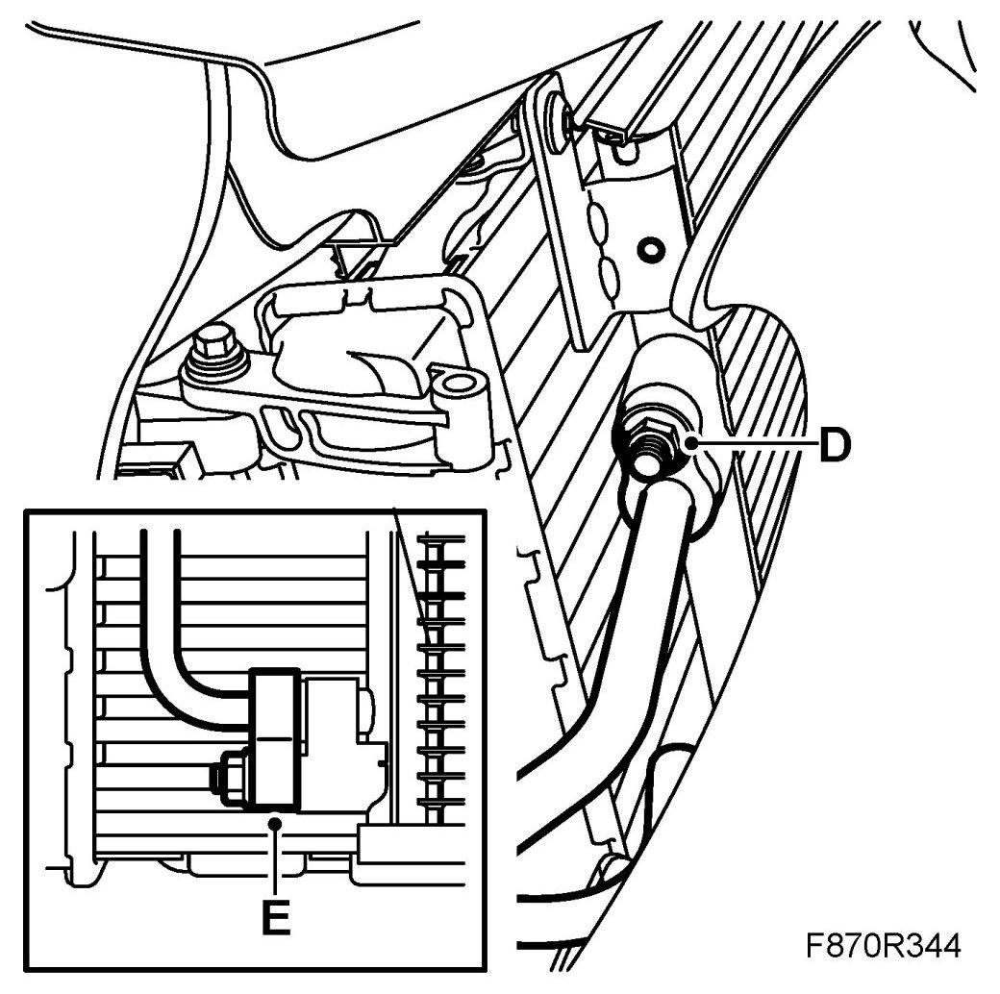
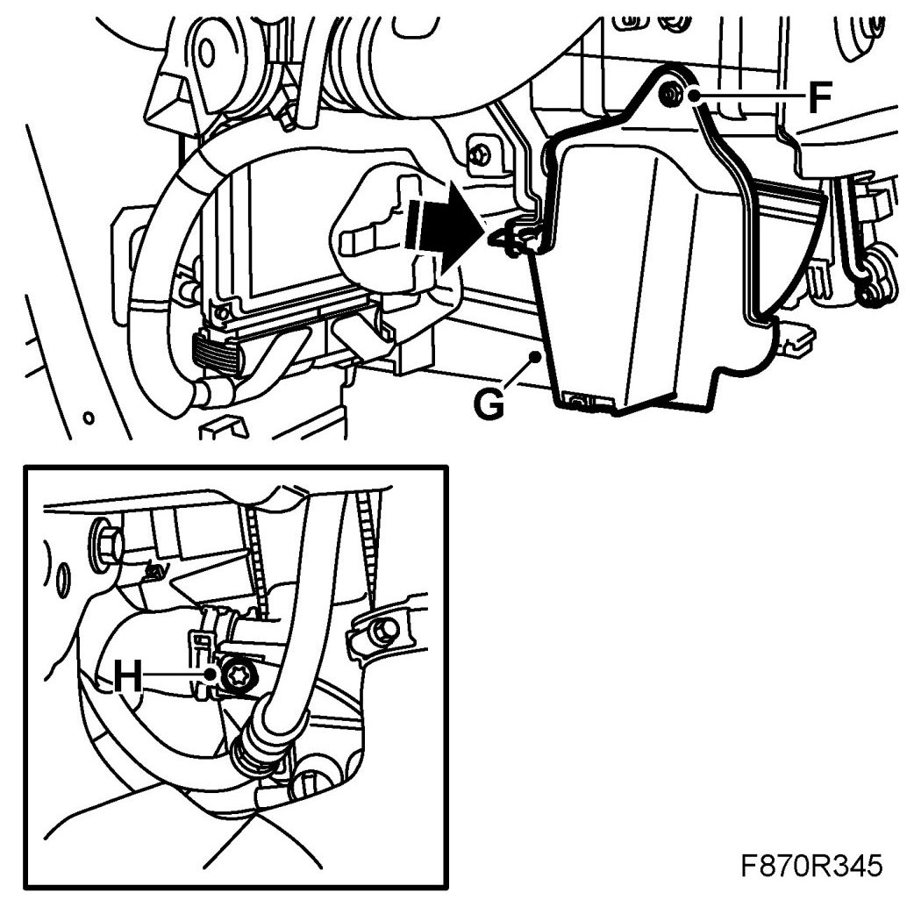
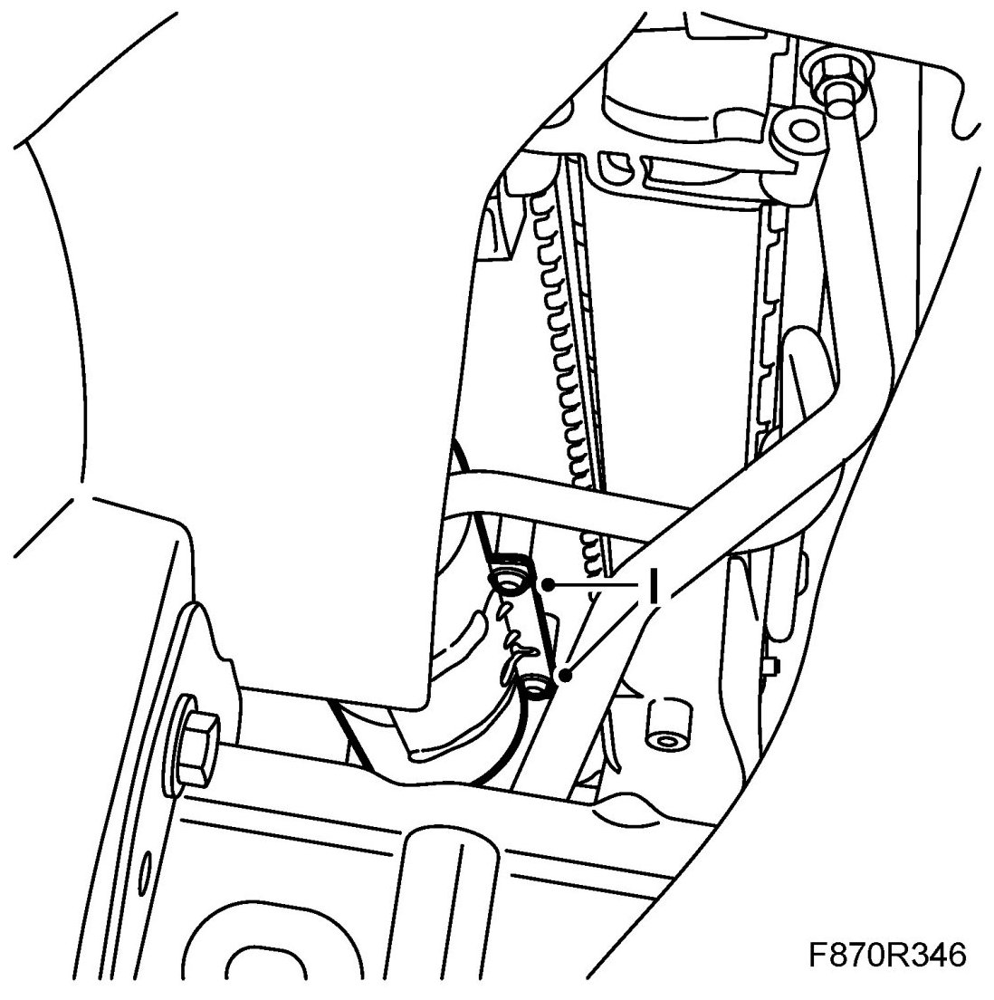
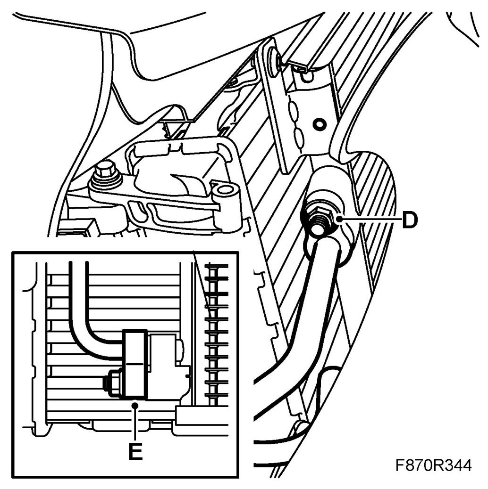
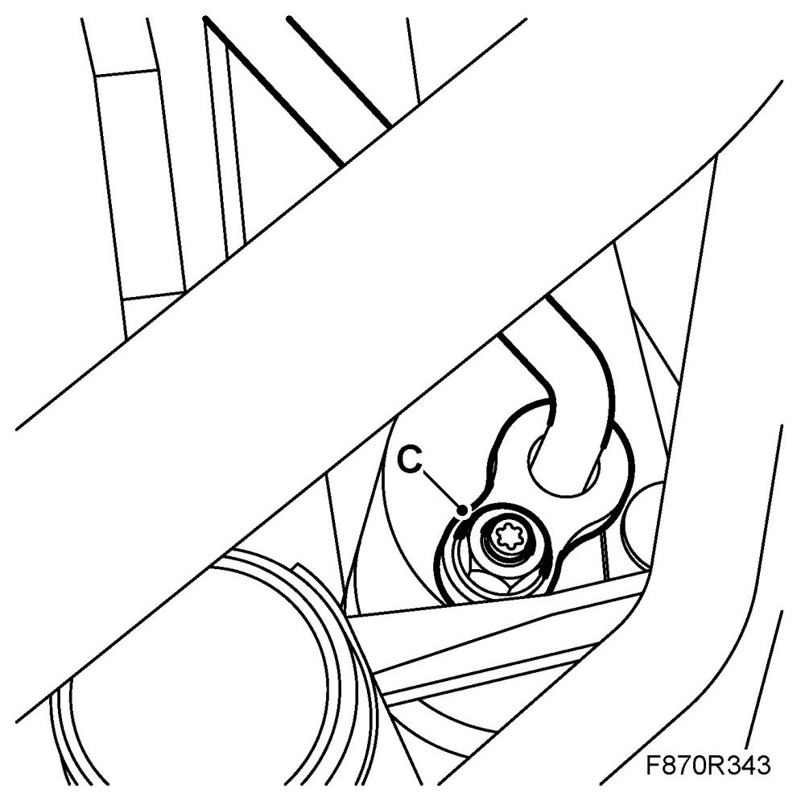
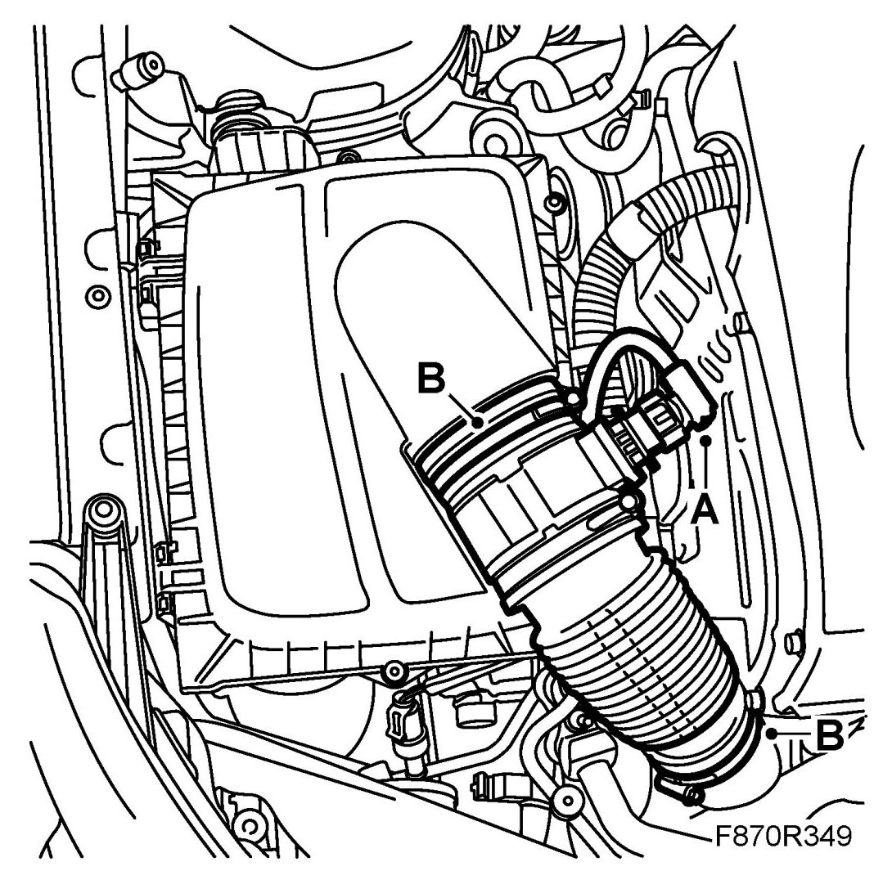

Receiver, Z19DTR
Receiver, Z19DTR
IMPORTANT: The A/C receiver and the compressor oil absorb moisture from the air, which can then not be removed. Plug all connections that are opened immediately.
To remove
1. Put the car on a lift.
2. Drain the refrigerant from the A/C system.
3. Remove the front bumper shell.
4. Remove the right-hand Headlight.
5. Unplug the mass air flow sensor connector (A).
6. Remove the hose (B) between the turbo intake manifold and the air cleaner housing.
7. Detach the high pressure pipe's PAD connection (C) from the receiver.
Plug the opening.

8. Raise the car to a suitable height.
9. Detach the upper (D) and lower (E) PAD connection from the condenser

10. Remove the nut and remove the right-hand cover (G)

11. Remove the screw (F) for the pipe to the upper PAD connection.
12. Remove the receiver's screws (I) and lower it.

To fit
1. Fill the compressor oil.
2. Raise the receiver to its position and tighten the screws (I).
3. Fit the screw (F) for the pipe to the upper PAD connection.
4. Fit the right-hand cover (G) using the screw.
5. Attach the upper (D) and lower (E) PAD connection for the condenser

6. Lower the car.
7. Attach the high pressure pipe's PAD connection (C) for the receiver.

8. Fit the hose (B) between the turbo intake manifold and the air cleaner housing.

9. Plug in the mass air flow sensor connector (A).
10. Fit the right headlamp.
11. Fit the front bumper shell.
12. Vacuum pump and fill the A/C system with refrigerant.
13. Check the performance of the A/C system. See A/C system performance test